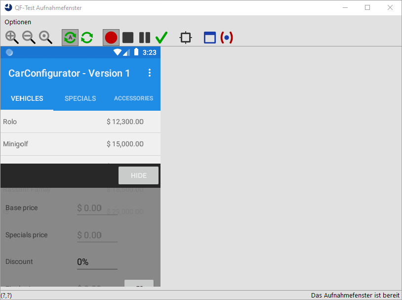
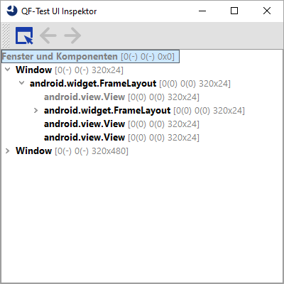

| Version 6.0.3 |
Mit den Zoom Knöpfen können Sie die Anzeige auf die
gewünschte Größe bringen. Bitte beachten Sie, dass das Aufnahmefenster nur ein Abbild
der Gerätebildschirms zeigt. Dieses muss gegebenenfalls manuell über den
Aktualisierungknopf  aufgefrischt werden oder kann auch automatisch durch Aktivieren von
aufgefrischt werden oder kann auch automatisch durch Aktivieren von  erfolgen.
erfolgen.
|
|  | ||
|
| Abbildung 15.19: QF-Test Android Aufnahmefenster | ||
Zusatzfunktionen:
Das Aufnahmefenster bietet auch ein paar Annehmlichkeiten. In der Fußzeile links werden die Mauskoordinaten angezeigt, was sehr praktisch ist, wenn man mit absoluten Mausklicks arbeiten muss. Rechts wird die Klasse der letzten hervorgehobenen Komponente angezeigt.
Über den  Fadenkreuz-Knopf in der Werkzeugleiste können Sie ein Inspektor-Fenster öffnen, das die
Komponentenhierarchie aller sichtbaren Komponenten inklusive Größe und Koordinaten
anzeigt. Dies dient hauptsächlich der Nachverfolgung von Problemen bei der
Komponentenaufnahme oder Wiedererkennung, kann aber auch sonst hin und wieder nützlich
sein.
Fadenkreuz-Knopf in der Werkzeugleiste können Sie ein Inspektor-Fenster öffnen, das die
Komponentenhierarchie aller sichtbaren Komponenten inklusive Größe und Koordinaten
anzeigt. Dies dient hauptsächlich der Nachverfolgung von Problemen bei der
Komponentenaufnahme oder Wiedererkennung, kann aber auch sonst hin und wieder nützlich
sein.
|
|  | ||
|
| Abbildung 15.20: Android Hierachiefenster | ||
| Letzte Änderung: 6.9.2022 Copyright © 1999-2022 Quality First Software GmbH |